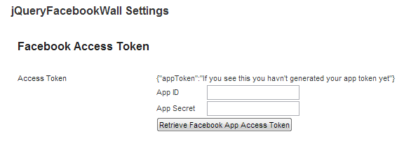
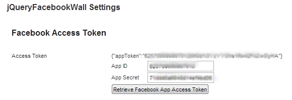
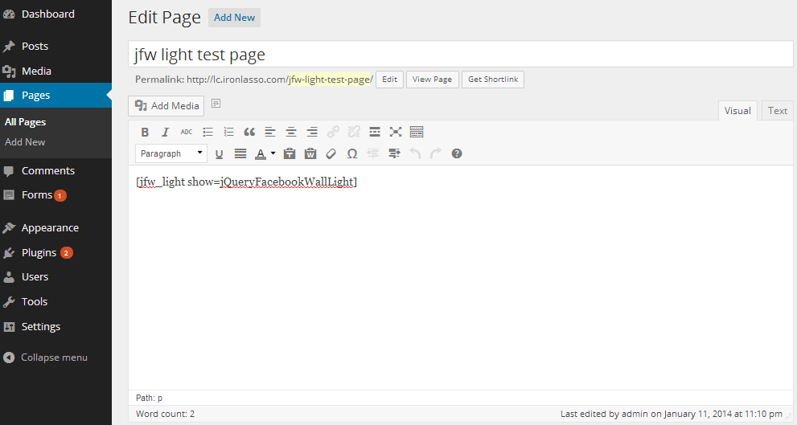
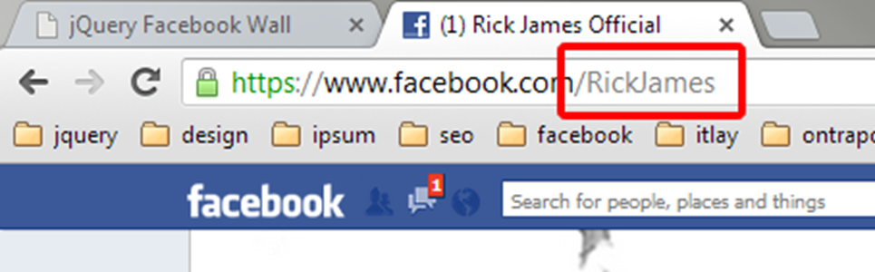
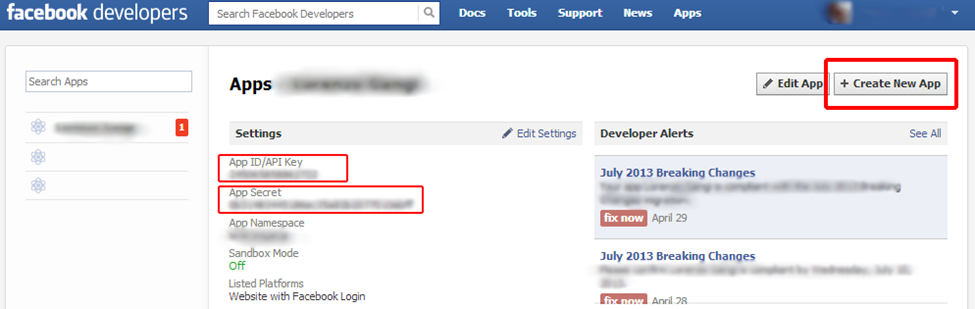
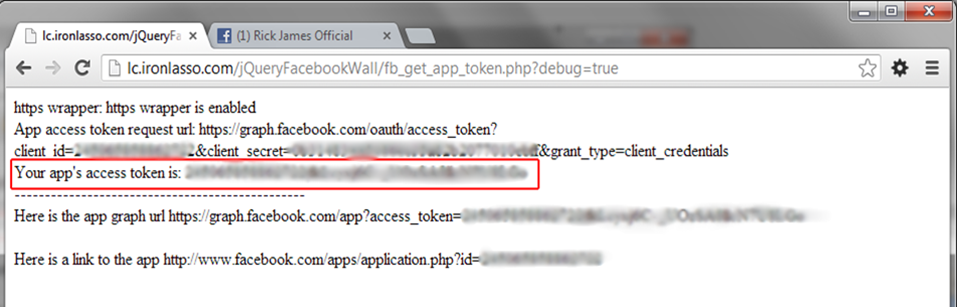

jQueryFacebookWallWPLight Documentation by Lorenzo Gangi v1.0
jQueryFacebookWallWPLight
Created: 12/12/2014
By: Lorenzo Gangi
Email: lorenzo@ironlasso.com
Thank you for downloading my Wordpress plugin. If you have any questions that are beyond the scope of this help file, please feel free to email via my user page contact form here or at ironlasso.com. Thanks so much!
Table of Contents
- Requirements
- Overview
- Getting Started / Installation
- HTML Structure
- CSS Files and Structure
- JavaScript
- Sources and Credits
- Shortcodes / Usage
- Plugin Settings
- Getting Data from Facebook
- Get your Facebook Account Name
- Create / Get your Facebook Account App Id/Key and Secret
- Get your Facebook Access Token
- Facebook Pages vs. Facebook User Accounts
- *Using the plugin on Windows IIS
Requirements - top
jQueryFacebookWallWPLight requires:
- jQuery 1.7 or above
- WordPress 3.5.1
- PHP 5
Overview - top
jQueryFacebookWallWPLight (JQFW-WPL) is Wordpress plugin that will retrieve your Facebook account data and build a Facebook styled feed on any website. JQFW-WPL provides a couple of features, pro version featrues are denoted by *:
- JQFW-WPL limits the number of posts and comments you can retrieve from facebook to 5.
- Three theme styles for displaying your Facebook data. There is a single column style theme, timeline style theme, and *wall style theme this can be set in your plugin settings.
- *Events Section that shows your Facebook events title, date, and description.
- *Albums Section that shows your Facebook albums, and links to a light box to browse the photos.
- *Photos Section that shows you Facebook timeline photos.
- *A Facebook style lightbox to browse your album and photo gallery.
- *Likes Section that shows your Facebook accounts likes.
- *Comments such that you can comment on any post that JQFW-WPL displays. You can also post comments on album and photos images in the lightbox.
- Likes so you can like posts, *comments, and *album images.
Buy the Pro Version Here
Getting Started - top
Follow these instructions to get your Facebook feed on your website. When you downloaded JQFW-WPL you got a file called jQueryFacebookWallWPLight_download.zip
- unzip jQueryFacebookWallWPLight_download.zip
- Its contents should look this:
/docImages
readme.html
readme.txt
/jQueryFacebookWallWPLight.ZIP
/css
/images
/js
/licensing
/template
fb_app_token.php
fb_get_app_token.php
uninstall.php
jQueryFacebookWallLight.php
- Install your plugin - Go to the Plugins page of your wordpress admin.
- Click the "Add New" button this wil take you to the Intall Plugins page.
- Click the "Upload" link on the Install Plugins page.
- Choose the jQueryFacebookWallWPLight.zip and click the "Install Now" button. You should see a message about unpacking and installing your plugin.
- Click the "Activate Plugin" Link this should take you back to your plugins page.
- Configure your plugin - Click the "settings" link in the jQueryFacebookWallLight row.
- Enter the Domain name of the website where the plugin is installed in the field labeled Domain.
- Get your Facebook Account Name and enter it in the field labeld Facebook User.
- Get / Create your Facebook Account App Id/Key and Secret
-
Find App ID and App Secret fields and Retrieve Button

-
Enter your App ID and App Secret and click the "Retrieve Facebook App Access Token" Button.

- if your app token retrieval fails see Get your Facebook Access Token
-
Save your settings. Click the button on the bottom of the settings page that says "Save jQueryFacebookWall Settings"
settings example - this will show the National Geographic facebook feed.

-
Add a Facebook feed to a page or post. In the wp-admin navigate to the page or post you would like to JQFW-WPL to and past the short code [jfw_light show=jQueryFacebookWallLight] in the content editor. Save and navigate to the page you should see your facebook feed.

- Adjust Plugin Settings - At this point your plugin is ready to go, however you can adjust the the other plugin settings as needed. See the *Plugin Settings section for details on settings function.
HTML Structure - top
All HTML created by the plugin is contained in <div class='facebook-wall' /> The plugin creates a two-column layout. Events, albums, photos, and likes are always placed in the right column. Posts are placed in in the left column for the wall style feed (which you can set in your settingss) and are placed in both the left and right columns alternating. The plugin also provides a light box to browse photo albums. The containing <div> for this is appended to the end of the parent .facebook-wall
Most of the HTML is managed via .ejs template files. See http://embeddedjs.com/ if you are interested in how that works. All of the template files can be found in yourPluginsDirectory/jQueryFacebookWallWPLight/templates/ if you should ever need to make any changes. In that directory you will find templates for:
- *Albums Section - albums.ejs
- *Photos Section - photos.ejs
- *Post and Image Comments - comments.ejs
- *Events Section - events.ejs
- *Likes Section - likes.ejs
- *Light Box - photoGallery.ejs
- Posts - story.ejs
CSS Files and Structure - top
All plugin CSS is located in the yourPluginsDirectory/jQueryFacebookWallWPLight/CSS/jQueryFacebookWallWPLight.css Only the minified version is available with JWF-WPL
The CSS document is divided five main parts:
- Shared Rules - These are used by both the timeline and wall styled feed.
- Timeline Rules - These are the rules used to style the timeline style feed.
- Wall Rules - These are the rules used to style the wall feed.
- Light Box styles - These are used to style the photo gallery light box.
- Helper styles - These are used to display the photo grids in the Album and Photo Section.
Also in included is a minified version of all CSS jQueryFacebookWallWPLight.min.css. Use this file instead of the unminified version to reduce load time and page weight.
JavaScript - top
All plugin javascript is located in yourPluginsDirectory/jQueryFacebookWallWPLight/js/. The plugin uses three javascript files:
- *jQueryFacebookWall.js - This is where all the magic happens. This file makes all the data requests to Facebook, builds the wall, and manages all wall user interactions.
- *ejs.js & view.js - As mentioned before, the plugin uses ejs javascript templating. These files make up the templating engine.
- jQueryFacebookWallLight.min.js minified javascript for the light version
*Also included is a minified version of all javascript jQueryFacebookWall.min.js. Use this file instead of the unminfied version to reduce load time and page weight.
Sources and Credits - top
I've used the following images, icons or other files as listed. You can find them in yourPluginsDirectory/jQueryFacebookWallWPLight/images/
- fb-loading.gif - a generic 'spinner' loading .gif
- fbBig.gig - a large (32px x 32px) Facebook style square loading gif
- fbSmall.gif - a small (16px x 16px ) Facebook style square loading gif
- fbSprite.png - all of the various icons used in the plugin
SHORTCODES / USAGE - top
jQueryFacebookWallWPLight has the following shortcode(s)
- [jfw_light show=jQueryFacebookWallLight] - adds a jqueryFacebookWall to a page or post.
Plugin Options - top
jQueryFacebookWallWPLight offers a multitude of settings so that you can tweak it to get exactly what you want.
Table column summary
| Setting: |
Name of the plugin option. |
Type: |
Data type of the setting. If the option is an enumerated, type the possible values are listed in array style syntax i.e., [‘value 1’, ‘value 2’]. |
Required: |
Defines if the option must be set; if ‘yes’ then the option value must be provided in the plugin instantiation call. If not yes, the default value of the option is listed. |
Description: |
Description of the settings functional purpose. |
Setting |
Type (javascript) |
Required |
Description |
|
|
|
|
appId |
string |
yes |
Facebook app id.
|
domain |
string |
yes |
Domain name where the plugin is used. i.e., www.ironlasso.com |
FacebookUser |
string |
yes |
Your book account name. |
display |
[‘timeline’,'single-column,*’wall’] |
timeline |
The display style of the wall. See examples.
Timeline style
Wall style |
posts.feedType |
[‘feed’,’posts’] |
feed |
Feed type defines if you would like to show the Facebook user's feed (include posts from other users) or posts (only posts from Facebook user). |
*posts.limit |
int |
10 |
The max number of posts to retrieve from Facebook. Note: Facebook may or may not return the max number of posts. Some posts get filtered for various reasons (privacy, blocked user, region, etc.).
light version is limited to 5 posts |
*comments.limit |
int |
100 |
Max number of comments returned from Facebook; 5000 is the max value Facebook allows.
light version is limited to 5 comments |
*comments.showAtStart |
int, ‘All’ |
2 |
The number of comments to show when the wall first loads; use 'All' to show all posts on load. |
*comments.showMoreNum |
int |
50 |
The number of comments that will be revealed when the 'view more comments' link is clicked for a story. |
*likes.show |
boolean |
true |
Show your Facebook account likes. |
*likes.useCoverPhotos |
boolean |
false |
Show only likes that have a cover photo defined, and use the cover photo as the like image. |
*likes.limit |
int |
5 |
The number of account likes to show. |
*albums.show |
boolean |
true |
Show your Facebook account albums. |
*albums.limit |
int |
3 |
Number of albums to show. |
*photos.show |
boolean |
true |
Show your Facebook account photos. |
*photos.type |
[‘profile’,’uploaded’,’tagged’] |
uploaded |
The type of photos to show in your photos Section. ‘Uploaded’ shows timeline photos, ‘profile’ shows your profile pics, ‘tagged’ shows photos you have been tagged in. |
*photos.numColumns |
[‘2’,‘3’,‘4’] |
4 |
The number of image columns you want in the photos Section, you may want to adjust the image height in jQueryFacebookWallWPLight.css => .Facebook-wall.timeline .photos .photo-cover-photo-wrapper |
*photos.showAtStart |
int |
12 |
The total number of photo thumbnail images to show. |
*photos.limit |
int |
25 |
The total number of photos to retrieve from Facebook. |
*events.show |
boolean |
true |
Show your Facebook account events. |
*events.limit |
int |
10 |
Max number of events to retrieve from Facebook. |
*debug |
boolean |
false |
Print plugin debugging info in the js console. |
Getting Data from Facebook - top
jQueryFacebookWallWPLight use the Facebook's graph API to retrieve your Facebook account data. Facebook needs to know who is asking for and retrieving their data; consequently, they have an authentication system to manage these needs. One way to retrieve data in this authentication system is via a Facebook App. The App in turn can request an access token, and once an access token has been acquired it can make requests for data from the graph API. Long story short, jQueryFacebookWallWPLight needs three things to get your Facebook account data:
- Your Facebook User Name (Id)
- A Facebook App associated with your Facebook account
- An Access Token for your Facebook App
Get your Facebook Username Name
Your Facebook username appears after the www.facebook.com/ in your browser URL. Usually it looks something like this: www.facebook.com/*yourUserName*. In other words, if you are Rick James, your Facebook URL looks something like: www.facebook.com/RickJames. Sometimes you have to look at your timeline to get your account name in the URL.

Once you have your username *yourUserName* you add it to yourplugin settings on the jQueryFacebookWall settings page in the Facebook User field.
Create / Get your Facebook Account App Id/Key and Secret
- Log into your Facebook Account.
- Go to https://developers.Facebook.com/apps
- If you have not registered with Facebook as a developer, do so.
- Click the Create New App button in the upper right hand corner to create a Facebook App.
- Fill out your App info, name, etc. The name is the only necessary field.
- Make note of your App Id/API key and App Secret they will be used to generate you Facebook Access Token.
- Use your App Id/API key for 'yourAppId' in the plugin call.

Get your Facebook Access Token
You should be able to retrieve an Access Token via the setting page, if you cant your can try running the jQueryFacebookWallWPLight php access token retrieval script by hand. To use it:
- Open fb_get_app_token.php and enter your Facebook App Id and Secret on lines 19&20.
15 $app_id = '----------------';
16 $app_secret = '----------------';
- Save and exit the file.
- Generate a Facebook access token for your Facebook App by running fb_get_app_token.php in your browser. If you have unzipped the plugin and put it in, say, yourDomainWebRoot/jQueryFacebooWall/, then in your browser open www.yourdomain.com/fb_get_app_token.php
- fb_get_app_token.php will retrieve an access token from Facebook and write it to the fb_app_token.php file. Make sure that fb_app_token.php has full write permissions.
- Open fb_app_token.php - it should contain something that looks like this: {"appToken":"2450 blahblahblahblahblah|fkLcyxj6C-_blahblahblahblahblah"}
- If it doesn't, you didn’t get an access token from Facebook. An alternative method of retrieving an App access token is running www.yourdomain.com/fb_get_app_token.php?debug=true This will show debugging information for the script. If it returns an access token, copy and paste it into fb_app_token.php

* To generate an App access token via the fb_get_app_token.php script, php must have https wrapper enabled. In your php.ini ;extension=php_openssl.dll must be uncommented. If you can’t do this you may have to contact your hosting provider or system administrator.
Get your Facebook Access Token - Without php
If your host doesn't support php, you don't have php's https wrappers enabled, or you just like doing things by hand, you can retrieve a Facebook access token by the following means:
- In the URL below, replace app_secret and app_secret with the App Id and App Secret you retrieved from Facebook in the previous step
- https://graph.facebook.com/oauth/access_token?client_id=app_id&client_secret=app_secret&grant_type=client_credentials
- Copy and past the URL in your browser and Facebook will return an App access token to you. It will be something like: access_token=256518697824517|nLKpMxbgiABaYfjhSSHf1GJj
-
Open the fb_app_token.html The contents look like this:
{"appToken":"If you see this you haven't generated your App token yet"}
Replace the "If you see this you haven't generated your App token yet" with the access_token you retrieved from Facebook. Make sure to leave the quotes.
It should looks like this when your done:
{"appToken":"256518697824517|nLKpMxbgiABaYfjhSSHf1GJj"}
- Save and close fb_app_token.html
Facebook Pages vs. Facebook User Accounts
jQueryFacebookWallWPLight plugin makes use of Facebook’s open graph API, which has various levels of authentication requirements. Facebook pages have looser restrictions than user accounts; therefore, the plugin can retrieve more info (posts and album data) for pages than normal accounts. jQueryFacebookWallWPLight will work with normal accounts, but you will not be able to retrieve album data and you will have to edit the permissions of your posts and photos in your Facebook account. If you don’t have a Facebook page, you should consider creating one. You can do so by logging into Facebook and going here: https://www.Facebook.com/pages/create/
Here are the caveats imposed by Facebook’s authentication requirements:
- Pages can have albums.
- Pages can show all posts.
- User accounts can’t have albums.
- User accounts don’t include all posts.
Using the plugin on Windows IIS - top
Yes can use the pluging with ASP and IIS! It takes few extra set up steps. You'll need to add .ejs mime types to IIS.
IIS doesn’t like the file extension of the ejs javascript templateing engine used by the plugin (.ejs). You need to add a MIME extension for .ejs with type :text/html in your IIS administration panel. If you do that everything should work . Here is an blog I found on the subject
The problem: http://forums.asp.net/t/1442319.aspx/1
How to add a mime type in IIS: http://technet.microsoft.com/en-us/library/cc725608(v=ws.10).aspx
Once again, thank you so much for downloading this plugin. As I said at the beginning, I'd be glad to help you if you have any questions relating to this plugin. You can ask me question at my site. No guarantees, but I'll do my best to assist.
Lorenzo Gangi
Go To Table of Contents